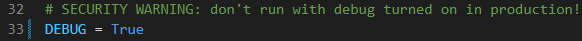
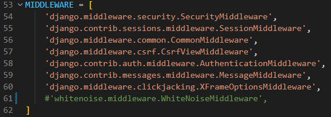
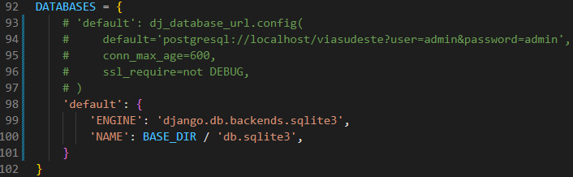
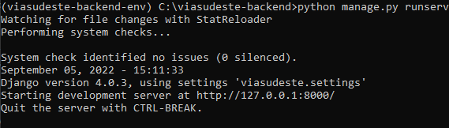

Clonando e preparando o ambiente
Nesta página iremos te mostrar um passo a passo de como clonar e preparar o ambiente para começar a mexer no projeto.
Clonando
Para começar, clone o repositório do github em uma pasta de sua escolha. Se tiver dúvida de como fazer isso, siga o tutorial abaixo, caso contrário pule para o segundo passo.
Antes de mais nada, instale o Python se você ainda não tiver ele instalado na sua máquina.
Tutorial
1 - Abra o terminal apertando Windows + R e digitando cmd.
2 - Navegue até a pasta de escolha para clonar o repositório utilizando o comando cd <nome da pasta>.
3 - Clone o repositório com o comando:
git clone git@github.com:guishas/via-sudeste-backend.git
4 - Entre na pasta do repositório (ela se chama via-sudeste-backend).
5 - Instale as bibliotecas necessárias com o comando:
pip install -r requirements.txt
Preparando o ambiente
Agora vamos configurar algumas coisas e preparar o ambiente para começar a explorar e mexer no projeto.
Abra o arquivo "settings.py" na pasta "viasudeste/" e confira se as variáveis das imagens abaixo estão como na imagem. Se não estiverem, corrija.
  
Por fim, podemos rodar o projeto e começar a explorá-lo. Vá para a raiz do repositório e rode o comando no terminal:
python manage.py runserver
Você deve receber uma mensagem assim no seu terminal:
